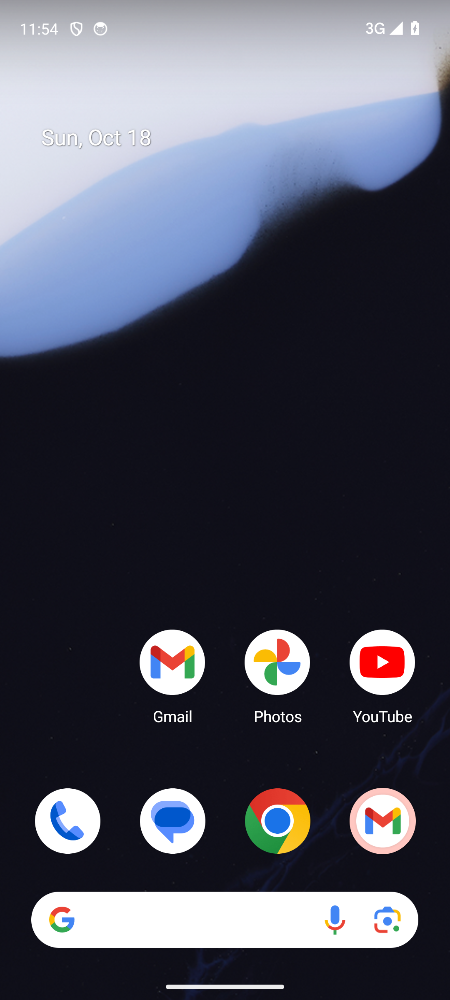

Real binaries from this repo, AVD T3 (Android 14) booted on /dev/kvm,
every agent verb via the real sidekick CLI. Full log: DEMO.md.
$ sidekick android create --profile T3
{"id": "emu_20261018-2", "status": "provisioning"} # host claims, boots AVD (~4 min cold)
$ sidekick android get emu_20261018-2
{"status": "running", "adb_target": "127.0.0.1:5555"}
$ sidekick android ui-tree emu_20261018-2 # refs: 17 (@e1..@e17)
$ sidekick android screenshot emu_20261018-2 --out shot.png # saved 1374041 bytes
$ sidekick test replay --in t.json --emu emu_20261018-2 --threshold 0.5
passed 1 steps # + record demo.mp4, netcap pcap, rotate 90/0, diff 0.00%, delete

| Claim | Status |
|---|---|
| Android loop above (scheduler, CLI, daemons, record/replay/diff) | WITNESSED |
| iOS loop (xcode build → ios create → act → preview link) | UNWITNESSED — needs a Mac fleet |
| K8s claims live on a cluster | UNWITNESSED — fake-client tests only |
| Postgres-backed scheduler under load | UNWITNESSED — pgxmock shapes only |
docker compose -f docker-compose.selfhost.yml up end-to-end | UNWITNESSED — no docker here |